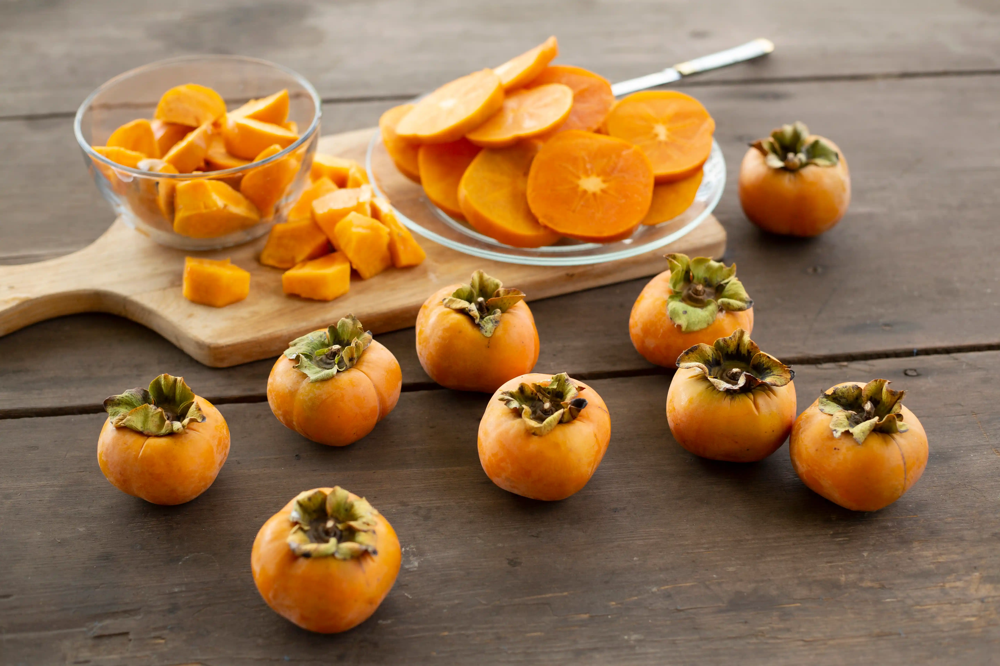
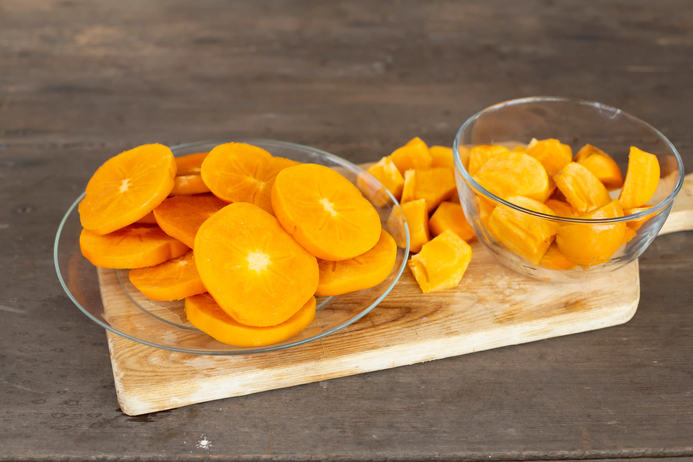
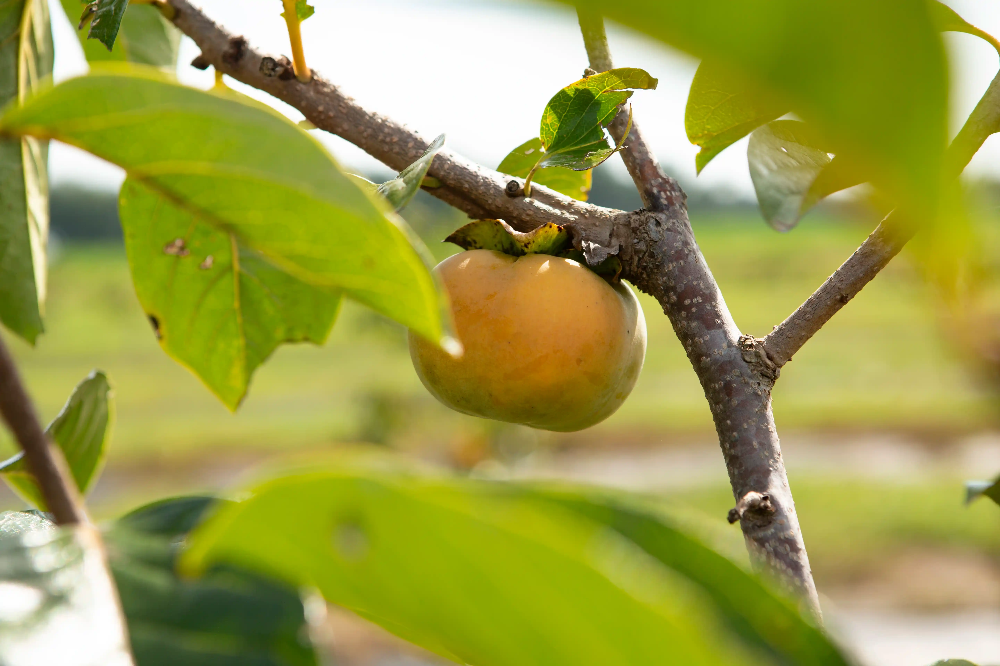

Health and Nutrition Benefits of Persimmons
Loaded with important nutrients

Persimmons are also a good source of thiamin (B1), riboflavin (B2), folate, magnesium and phosphorus. These colorful fruits are low in calories and loaded with fiber, making them a weight loss-friendly food. Just one persimmon contains over half the recommended intake of vitamin A. The leaves of the persimmon fruit are also high in vitamin C, tannins and fiber, as well as a common ingredient in therapeutic teas available in our shop.
Antioxidant superfood

Manganese, B-Complex vitaamins, copper, phosphorus, as well as phytonutrients, flavonoids, and anti-oxidants. Low in calories and fat. Fuyus are an excellent source of fiber. Read more about the nutritional content of Fuyu Persimmons.
Rich in Fiber

The Fuyu Persimmon Variety originated in Japan where it is regaled as the national fruit. Latin for “food of the gods”, the persimmon has enjoyed enormous popularity worldwide in the culinary world, and in the homes of the American population. Fuyu persimmons add just the right touch of sweet freshness to raw and cooked dishes alike.
Delicious and Easy Addition to Your Diet
Persimmons can be added to a variety of dishes to provide an extra boost of nutrition. These fruits can be enjoyed fresh as a simple snack or used in delicious recipes. In fact, they pair excellently with both sweet and savory foods.
Ways to add persimmons to your diet:- Slice persimmons onto a salad for a flavorful addition.
- Top your morning yogurt or oatmeal with fresh or cooked persimmon for a burst of natural sweetness.
- Roast persimmons in the oven and drizzle with honey for a tasty and healthy dessert.
- Mix dried or fresh persimmon into muffin, bread or cake mix.
- Combine with berries and citrus fruits for a delicious fruit salad.
- Broil persimmon and serve with baked Brie for a tasty appetizer.
- Bake persimmons with chicken or meat for a unique flavor combination.
- Try our refreshing persimmon leaf tea